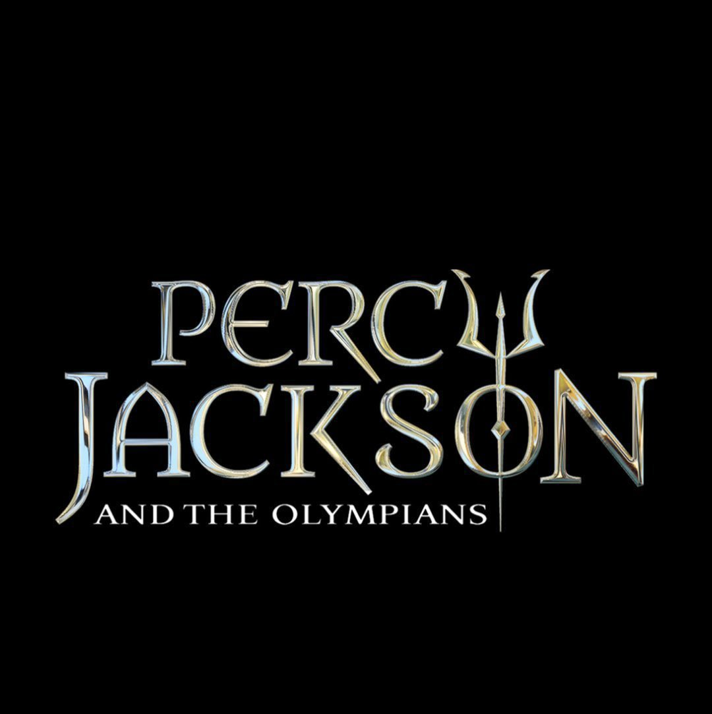

Why Percy Jackson?
October 5, 2026 by Brianna Passley

I was first introduced to percy jackson and the olympians during my childhood, through the movies that were made. At first, i didnt pay much attention to it until the recent TV series premeired. I found it interesting to see a storyline created around a kid finding out he's a half 'god', getting thrown into quests and having to navigate that space. The show overall made me want to get more into greek mythology as i indeed did.
As I started reading more about greek mythology, i realised that most of the gods were extremely dramatic, they were always playing favourites and butting into human issues. They are also often playing favourites to their more powerful "half blooded" children. By getting into this fictional story, it made me found the TV series even more entertaining now, knowing what the backstory behind the TV series was. Now, when i hear about zeus of athena, im brought straight to camp half blood with Percy Jackson and the Olympians.